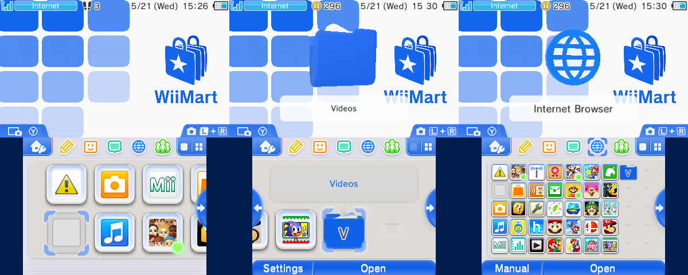
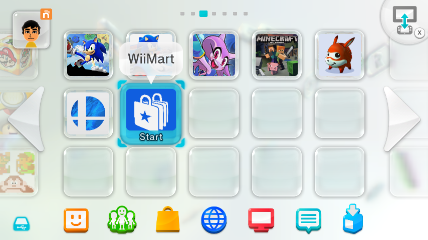
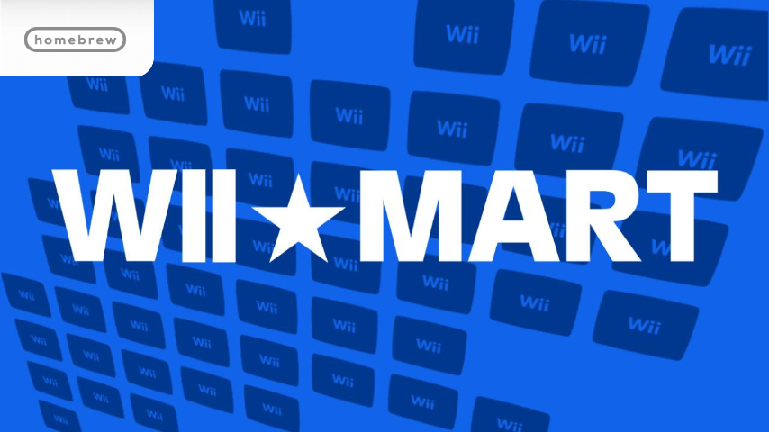
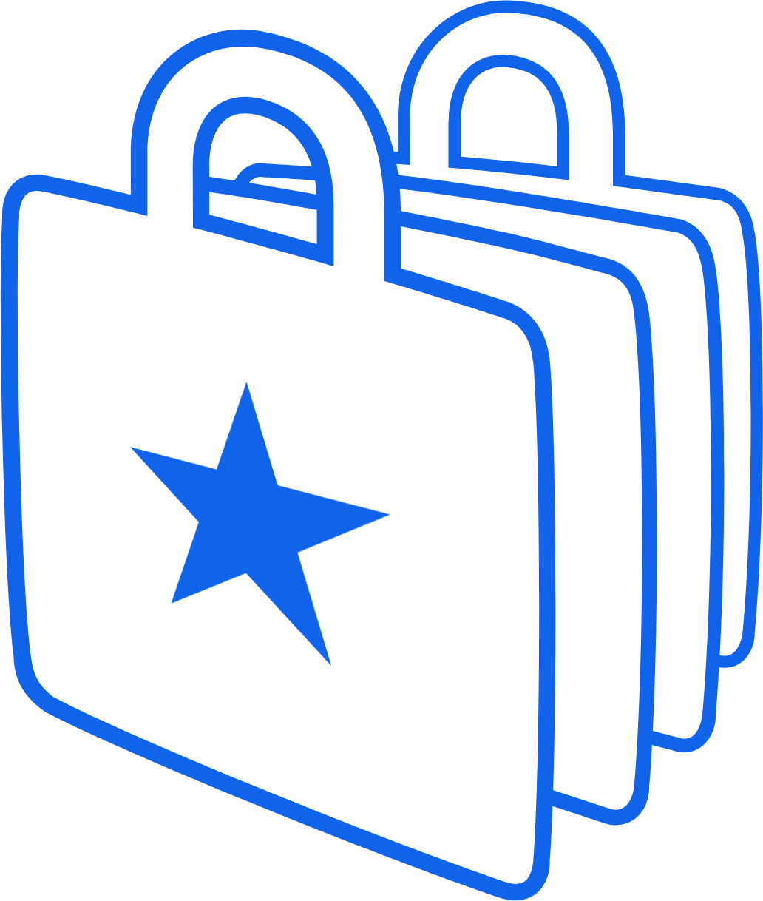

bgm plr..


This cute theme brings WiiMart to your 3DS alongside the Wii Shop Channel background music.
DownloadPut the ZIP file into sd:/Themes and install it with the Anenome themeing tool.


This handy forwarder takes you from the Wii U Menu straight to WiiMart! (Launches in TV and GamePad view.)
DownloadPut this WUHB file into SD:/wiiu/apps. Aroma required!
Convert Nintendo's block format into readable bytes!
XXXX-XXXX-XXXX-XXXX
Click on the button below to generate a random Wii Points Card number. It will not work when used on WiiMart.


The wordmarks should be visible on the background they are in, like shown.



Here are two shop icons with one WFC joke.


The icons and banners are recolors of Wii Shop Channel textures, WiiMart itself is primarily a parody of 90s Walmart branding, font included.
If you weren't already aware, the Wii Shop Channel is a web app. The original Wii Shop Channel was hosted at oss-auth.shop.wii.com, while WiiMart is hosted at oss-auth.thecheese.io.
To go on the official one you'd need a special certificate and user agent. WiiMart's server does not need those, making it very easy to access!
{kind=link}
{kind=link}